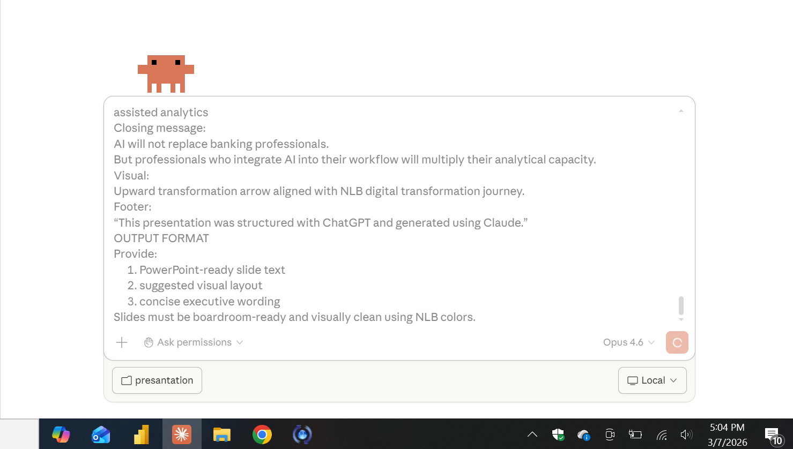
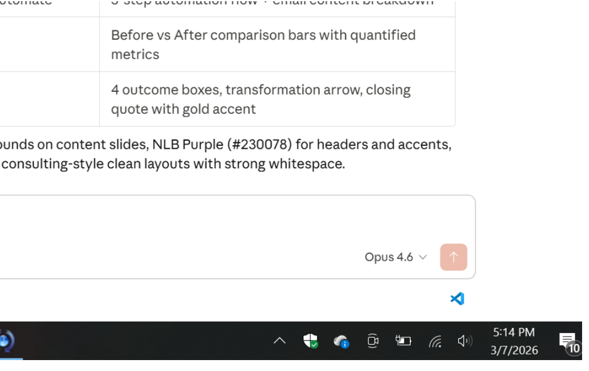

Using One Structured Prompt
AI became part of my daily professional workflow.
Every day I collaborate with AI during analysis.
During the last 12 months, AI supported several areas of my work.


"These visuals were generated with AI in less than 10 minutes during the preparation of this presentation."
Concept project for improving liquidity reporting. AI helped design the analytical structure.
Responsible AI use requires governance.
AI will not replace banking professionals.
But professionals who integrate AI
into their workflow will transform
how decisions are made.
"This presentation was structured with ChatGPT and generated using Claude."